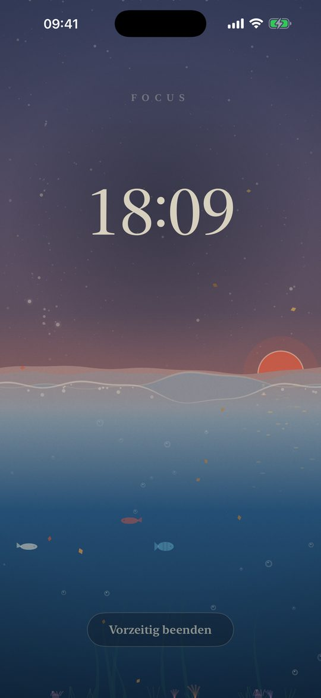
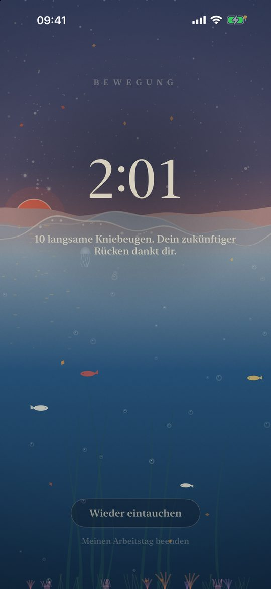
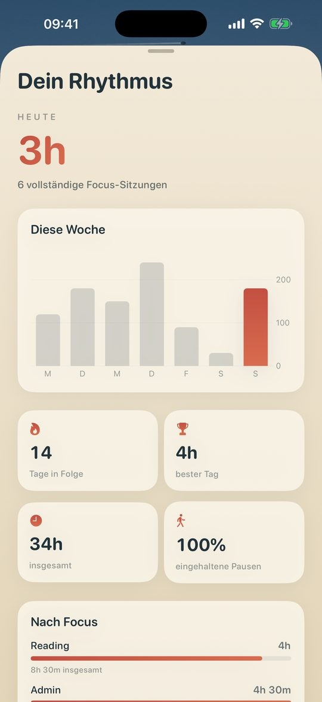

Cadence
Focus-Timer und App-Blocker für iPhone, iPad und Mac.
Dreißig Minuten Deep Work, dann drei Minuten auf den Beinen. Das Meer steigt, während du dich konzentrierst, und sinkt, während du dich bewegst, unter einem lebendigen Holzschnitt-Himmel, der deinem echten Tag und deinem lokalen Wetter folgt.
Im App Store ladenKostenloser Download. Das Sperren ist für drei Focus-Sitzungen kostenlos, danach schaltet ein einziger Kauf es auf all deinen Geräten dauerhaft frei. Kein Abo.

Was Cadence kann
Ein Focus-Timer, der dich bewegt
Standardmäßig dreißig Minuten Focus und drei Minuten Bewegungspause, einstellbar von 10 bis 50 Minuten. Die Pause dauert ein Zehntel der Arbeitszeit und beginnt von selbst, damit du wirklich aufstehst.
Sperrt ablenkende Apps und Websites
Wähle mit Apples Bildschirmzeit die Apps, die während eines Focus gesperrt werden. Die Websites der sozialen Netzwerke auf deinem iPhone werden ebenfalls gesperrt, in Safari und in anderen Browsern.
Eine Nachtsperre für deine Nächte
Wähle zwei Uhrzeiten, etwa 23 und 7 Uhr, und die gewählten Apps sperren sich jede Nacht, auch wenn Cadence geschlossen ist. Auf dem Mac warnt dich ein Countdown zehn Minuten vorher.
Deep-Work-Modus
Ist er aktiv, lässt sich ein Focus nicht vorzeitig beenden. Die Glocke entscheidet.
iPhone, iPad und Mac, synchron
Eine native Mac-App mit Timer in der Menüleiste, die die gewählten Apps ausblendet. Sitzungen, Einstellungen und Nachtsperre folgen dir über iCloud.
Siri, Widgets, Live-Aktivität
Starte oder beende einen Focus mit Siri oder im Kontrollzentrum und verfolge die Flut in der Dynamic Island.
Mac

Warum jede halbe Stunde aufstehen
Sitzen ist nicht das ganze Problem; ununterbrochenes Sitzen schon. Studien zu ununterbrochener Sitzzeit (Diaz et al., 2017; Duran et al., 2023) und die WHO-Leitlinien von 2020 zeigen in dieselbe Richtung: sie oft unterbrechen. Cadence ist um diesen Rhythmus herum gebaut.


Privat von Grund auf
Kein Konto, keine Werbung, kein Tracking. Cadence sammelt keine Daten: Dein Verlauf bleibt auf deinen Geräten und in deiner eigenen iCloud.
Fragen
Wie sperre ich Apps nachts auf dem iPhone?
Aktiviere die Nachtsperre in Cadence, lege die Uhrzeiten fest und wähle die Apps. Jede Nacht sperrt iOS diese Apps zur gewählten Zeit bis zum Morgen, auch wenn Cadence nicht geöffnet ist.
Ist Cadence ein Pomodoro-Timer?
Es funktioniert wie einer, mit Blick auf die Gesundheit: dreißig Minuten Focus, dann eine kurze Pause im Stehen. Die Focus-Dauer ist einstellbar.
Werden Websites auch in Chrome gesperrt, nicht nur in Safari?
Ja. Während eines Focus werden die Websites der sozialen Netzwerke auf deinem iPhone in allen iOS-Browsern gesperrt, auch in Chrome.
Gibt es ein Abo?
Nein. Cadence ist kostenlos. Das Sperren ist für drei Focus-Sitzungen gratis; danach ist Cadence Premium ein einmaliger Kauf für iPhone, iPad und Mac.
Läuft Cadence auf dem Mac?
Ja, als native App aus dem Mac App Store. Sie blendet die gewählten Apps während eines Focus aus und kann während der Nachtsperre den ganzen Bildschirm abdecken.